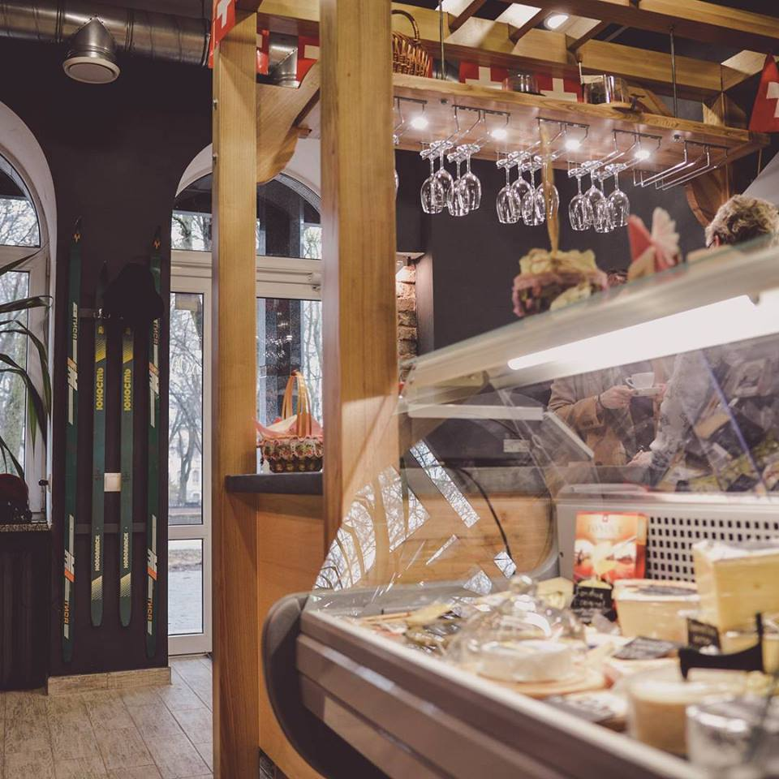
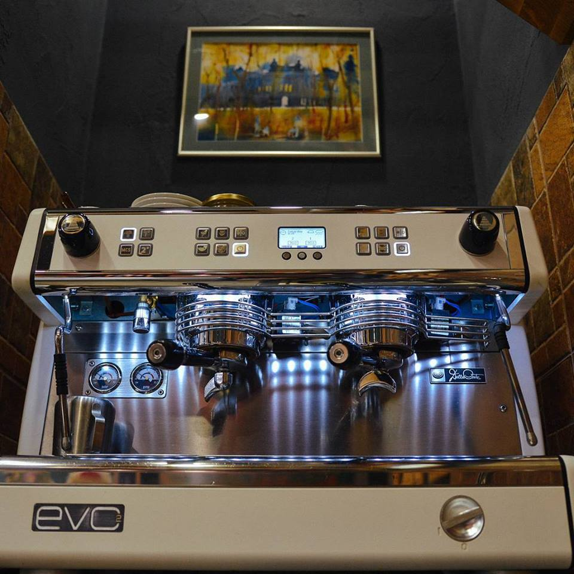

Экстерьер ресторана
Фасад ресторана состоит из двух мраморных колон повторяющих боссаж здания. На карнизе здания расположена явственная вывеска, которая поможет вам быстрее нас найти.

Интерьер ресторана
Интерьер выполнен в выдержанном деревянном стиле. Вокруг полно атрибутики, которая постоянно будет напоминать вам о Швейцарии.

Оборудование
В нашем заведении используется только самое новое оборудование для приготовления фондю и горячих напитков.